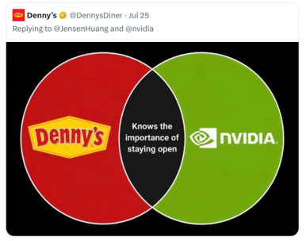

Project Pergamon
Project Pergamon
Field Notes.
Working notes, methods, and progress from the public AI archive.
Why “Public” AI?: A Pragmatic Vocabulary for AI Model Preservation
“Pragmatism is not a philosophical Weltanschauung [worldview] or a new metaphysics of truth and reality. Rather it is a method of rendering ideas clear and distinct and ascertaining the meaning of words and concepts.”
— Cornel West, The American Evasion of Philosophy: A Genealogy of Pragmatism
What makes an AI system “open”? Ask two different groups of people and you'll get two different answers. For the average developer working in American industry today, “open” means “I get to download something for free and use it how I want”. To be a little more technical, “open” refers to the model’s weights: the sheets of numbers you need to get the system running on your own hardware. But that quick-and-dirty definition won't cut the mustard with the Open Source Initiative, the American nonprofit that tries to set the rules of these discussions. Under their Open Source AI Definition (OSAID), a model isn't “open source” unless enough of its training code, data, and process gets published for anyone to study and rebuild it.
So when developers say “open,” they mean, “I can do what I want with this for free”. And when the OSI says “open,” they mean, “I can see exactly how this was made”.
Words mean what they do. But can a word do too much at once? It’s my view that “open” is being pulled in too many directions by too many demands for attention. Consider this meme that circulated during the debates over what “open” can mean in AI:

For Denny’s, “open” advertises 24-hour service. For Nvidia, “open” means open-weights. The diagram is silly by design. Building a technical stack on open-weights models has nothing to do with getting scrambled eggs at 3:00 AM (unless you stay up all night building AI systems and get hungry, which I suppose makes you the audience Denny’s wants to reach). And neither use has anything to do with OpenAI, a company that distributes no open-weights or open-source models at all.
That’s at least four uses of one word, all talking past each other:
- OSAID: Open means weights, training data, checkpoints, and code can all be publicly viewed and archived.
- Nvidia: Open means weights are freely distributed for practical use by developers.
- Denny’s: Open means the restaurant is not closed.
- OpenAI: Open means our brand signals transparency and trust.
Let’s set aside Denny’s and OpenAI, because neither is using “open” in the specific sense of making AI system components visible to the public. That leaves the two definitions we started with: open-weights (Nvidia and the developers) or open-everything (the OSAID).
Words mean what they do. And both uses of “open” do useful, defensible things in their specific contexts. But what I want to suggest is that for digital preservation, neither usage helps.
On one side, models are more than their weights. A researcher in 2050 studying a model from 2024 will want to link it to its training corpus or inspect its checkpoints. So we can't conflate “open AI models” with “models that offer open weights.” Those are two different uses of “open” that invite Denny’s unserious thinking. On the other side, the OSAID sets the bar so high that vanishingly few publicly released models actually clear it. The models that most of humanity calls open fail the OSAID test; they ship under less exacting licenses like Apache 2.0. A standard that excludes most of the things it's supposed to cover isn't much use as a standard. Worse, it opens the door to a legal wilderness of competing licenses that researcher can’t navigate without expensive lawyers, raising the barriers to access that an archive exists to lower.
Means and ends
The gap between these two “opens” tracks a distinction that runs through most political problems in democratic societies: the distinction between means and ends. In this case, it’s a distinction between how a thing gets made and what it's good for once it exists. For developers and Nvidia, “open” is about ends: new code ships, customers are satisfied, and the thing we call the innovation economy grows apace. For the OSAID, “open” is about means: process, procedure, provenance.
Both matter, and neither can stand alone. A building is useful whether or not you can see the blueprints. But a building constructed without regulation over its means and materials endangers everyone inside it. An AI system is useful without access to its training procedure. But a company that trains without transparency may be profiting off information that isn't theirs to use, or smuggling bad data into its models without users ever knowing. Ends pursued with no regard for means are a recipe for disaster; means enforced so strictly that nothing gets used are a recipe for irrelevance. The OSAID's emphasis on training transparency could, if broadly adopted, resolve real mistrust toward companies that hide data collection behind smoke and mirrors. But standards have a way of turning into gatekeepers, even when they weren't written to exclude anyone; And, in practice, the OSAID narrows what institutions can justify collecting. No law says it has to be this way. It's just that a vocabulary that grew up around open-source software has stopped making sense in a world where Denny's is making memes about AI.
Public AI
This is why Pergamon advocates for a reset. We aren't going to tell you what “open” should mean. We just observe that the word means too many things to too many people. And so, we've introduced a different term: Public AI.
Public AI is AI that is available to the public. You don't pay to check a book out of a public library, you don't pay an entrance fee at a public park, and you don't pay to download the working components of a Public AI model. So Public keeps the developer's ends-first definition in that one big way. But Public differs from the developers’ “open” in another big way: Public doesn't mean “anything goes,” either. That’s where Public refers to “the public interest.” It names the idea that certain projects are worth doing because they potentially benefit everyone. A public library built from shoddy materials that collapses on its readers is not a library built in the public interest; we need to know enough about a system's means to know they won't conflict with Public ends.
Here the practice of historic preservation is instructive. A building can be condemned for habitation and landmarked for study in the same year. Preservationists don't certify that a structure is safe to live in; they certify that it's worth saving from demolition. Pergamon draws the same line. A model in our archive is fit to study, which is not a judgment that it's fit to deploy. Some publicly distributed models were withdrawn by their own makers precisely because they were judged unfit to inhabit. That makes them more important to preserve, not less: future alignment researchers will want to examine exactly the systems their creators decided to stop serving.
Pergamon serves those researchers, but we can no more control how our holdings get used than a library can control what people do with its chemistry textbooks. The answer isn't to restrict access to the textbooks. It's to keep good records of the collection.
ARCHI
That's where the ARCHI standard comes in. ARCHI is Pergamon's technical answer to the problem of harmonizing means and ends in the public interest. It starts from a simple observation: the thing we call “AI” isn't one thing at all. It's a bundle of artifacts, institutions, processes, and rules. Each component can be more or less available for inspection and reproduction, independently of the others.
ARCHI creates a public record of what is shared and what is withheld. If a model ships with open weights but no training data, its ARCHI record says exactly that. Weights and training data but no checkpoints? The record says that too. Think of it as a catalog record that lists not just the title and author, but which chapters are present, which are missing, and which pages have been torn out. ARCHI never renders an “open” or “not open” verdict on a model as a whole. It only asks, component by component: is this specific kind of information available to the public?
Now, I’m far from the only one to recognize the need to make these different components legible. Since 2023, Andreas Liesenfeld and Mark Dingemanse at Radboud University have graded language models component by component. Like me, they were concerned with irresponsible uses of the word “open.” But Liesenfeld & Dingemanse have different pragmatic ends. Their European Open Source AI Index was built to serve the needs of policy makers, not interpretability scholars. And policy requires simple, ready-made normative judgements, not nuanced, layered descriptive accounts. Max Weber famously drew this line when he tried to define “Science as a Vocation”, saying that where scholars describe the world, politicians make decisions about it. Thus, the European OSAI Index ranks models from most to least “open”: That very harried word, which could be made to refer to anything from diners to data, becomes a single standard every system gets measured against. Whereas ARCHI reserves judgment. It renders no ranking and simply records the components as they were found in situ. The difference between the two approaches is pragmatic, because it reflects what policy and scholarship each require.
After all, where an index scores what a release contains on a website, ARCHI writes the record into the archival package itself. To learn more, check out the first draft of the specification here. It follows the BagIt standard used by the Library of Congress, which means that a model that is missing its record doesn't validate. The description can't be separated from the thing described.
But if ARCHI is the catalog record, what's the book made of? In the next post, we'll dig into Pergamon's namesake and why information survives best when it lives on multiple substrates. It’s a story that will take us from the latest headlines to ancient history, back to the early days of humans writing stuff down and keeping it in libraries. Until then, thanks for your interest in our archive, please do get in touch if you’d like to help with our mission, and make sure to eat a hearty breakfast (whatever time of day you end up having it).